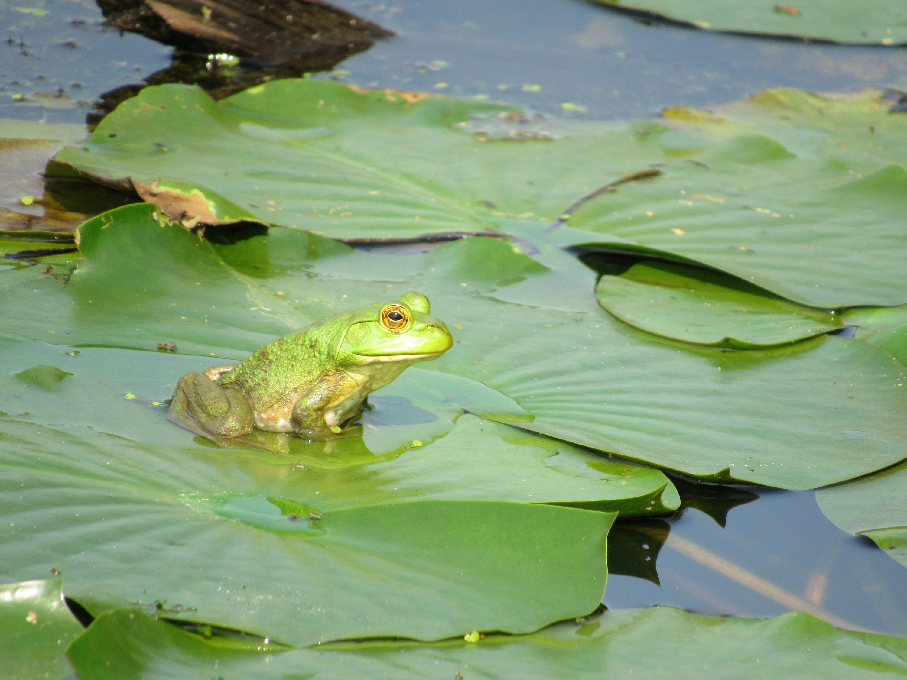
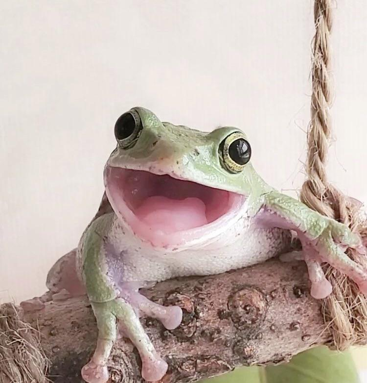
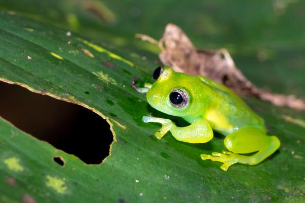
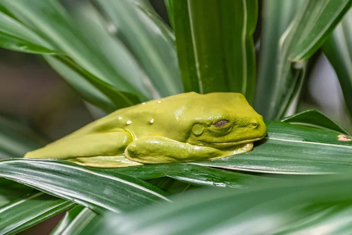
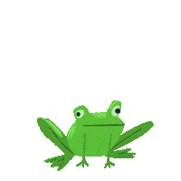

Ranita sobre nenúfar
Disfrutando de la calma del estanque.
Un bosque adorable lleno de ranitas.

Disfrutando de la calma del estanque.

Una sonrisa que alegra el bosque entero.

Siempre explorando entre hojas y bellotas.

Descansando en su rincón favorito.
